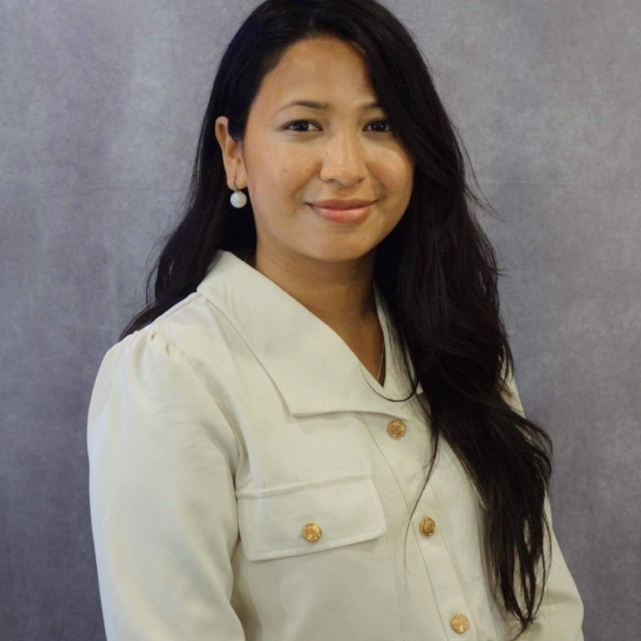

My research helps software developers write code that executes as intended. My interests are in programming languages, formal methods, automated reasoning, logic, program synthesis, verification, and security.My research focuses on the co-development of logic solvers and program reasoning systems---how can we develop logic solvers that via first principles are capable of producing examples and proof certificatess that can be be used for higher level tasks and conversely how can we decompose program reasoning problems into a series of logical problems that is directed by or uses the examples and proof certificates produced by the underlying logic solvers.
If you are a current student at Montana State University (MSU) and are interested working with me send an email or drop by my office to chat. Otherwise, I encourage you to apply to MSU's masters or PhD program and send me an email with why you're interested in my area of research.
I don't expect prospective students to already be experts in my area of research; however, students with
a strong background in Computer Science, Discrete Math, and/or Logic will be best prepared for the kind of
work I do in my research. I am more than happy to teach students the tools and techniques they need for
research in programming languages, formal methods, and (advanced) logic through the course of research.
Some books I have found helpful in my research and learning are: